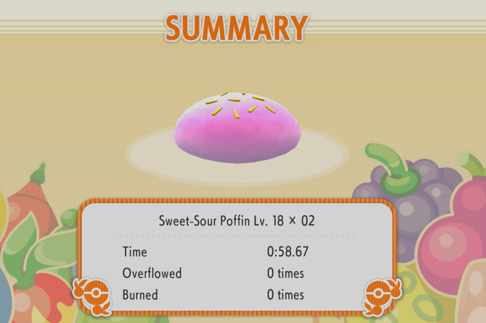
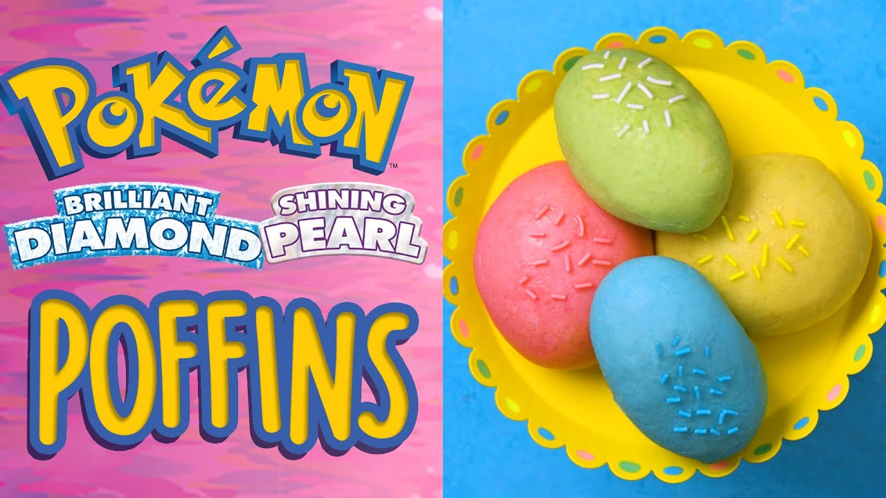

Poffins

Poffins as seen in the Pokemon Games (image from Brillant Diamond / Shining Pearl)

Real life recreation of the popular Poffin.
What are Poffins?
Poffins are a popular food item in the world of Pokemon that were first
introduced in the Generation IV games. These delicious treats are popular
among pokemon contest participants due to having a mystical ability to raise
certain conditions to help their pokemon glow during beauty contests. In this
recipe. We will be recreating a Pokemon and Human friendly version of Poffins so
that Pokemon and Trainers can both enjoy these treats. As a bonus we will be creating
Poffins with three different fillings.
Ingredients
Matcha Paste Filling
- Shiroan / White Bean Paste (200g)
- Matcha (1 tsp)
Potato Paste Filling
- Okinawa Potato (1/2 lb)
- Condensed Milk (1 1/2 tbsp)
- Evaporated Milk (1 1/2 - 2 tbsp)
Strawberry Creme
- Dehydrated Strawberries (10g)
- Heavy Cream (1 cup)
- Sugar (2 tbsp)
Yuzu Creme
- Yuzu Jam (4 tbsp)
- Heavy Cream (1 cup)
- Sugar (Just a dash)
For Dough
- Active Dry Yeast (3g)
- Milk (155g at 100 Degrees F)
- Bread Flour (200g)
- Sugar (16g)
- Salt (2g)
- Food Coloring (Green, Yellow, Red, Blue)
- Unsalted Butter (15g softened)
- Seasame Seeds
Recipe Instructions
For Matcha Paste Filling
- Mix Shiroan / White Bean Paste and Matcha until well incoporated.
- Transfer to a container, and fridge until ready to use.
For Potato Paste Filling
- Peel, slice and steam potatoes for about 20 minutes.
- Mash the potatoes, then mix in condensed and evaporated milk until well combined
- Transfer to a container, and fridge until ready to use.
For Strawberry Creme
- Crush Strawberries until a powder is achieved.
- Combine all ingredients and whip until desired consistency.
- Transfer to a container, and fridge until ready to use.
Yuzu Creme
- Combine all ingredients and whip until desired consistency
- Transfer to a container, and fridge until ready to use.
Main Recipe Instructions
- Combine milk, yeast, and a pinch of sugar to activate the yeast.
- In a separate bowl, combine flour and 16 g sugar. Then, add milk yeast mixture.
- After mixing a bit, incorporate salt and continue mixing.
- Transfer to a surface, or use a stand mix, and knead the dough until it looks smooth and even, about 5-6 minutes. Separate into four pieces of dough (for the four variety of filling and colors)
- Flatten the doughs, add butter, a drop of food coloring (respectively to flavors), fold, and continue kneading the doughs until it looks shiny, smooth, and even.
- While working on dough, cover the others so they don’t dry
- Place in several greased bowls/baking sheets, cover well with plastic wrap, and allow to rise for 2 hours. It should about double
- You want plenty of space between all doughs due to how much it rises and it touching
- Transfer to a flat surface and release the air from the doughs. Begin shaping each dough.
- Depending on the dough yield and preferred size, you can cut each colored dough into 2s
- Cover again, and...
- For matcha and potato dough, we will let it rest for 10 minutes so that we can put the filling inside to bake. We want the gluten to relax a little as we will be working with it again.
- For strawberry and yuzu, pinch the dough to close and shape into a poffin. Set aside on a greased baking sheet that is well covered, let it rise for an additional 30 minutes. Set aside as we continue next steps.
- Preheat the oven to 350°F.
- After matcha and potato dough rests, lightly press the air out and begin filling the center with matcha and potato paste, respectively. Pinch dough tightly to close, and shape the bun into poffin.
- In a large greased pan, set matcha and potato dough, covered, to rise for an additional 30 minutes. Then design with sesame seeds/sprinkles
- Bake in the oven for 16-18 minutes
- Allow to cool. Pipe if needed.
- Enjoy!!!!